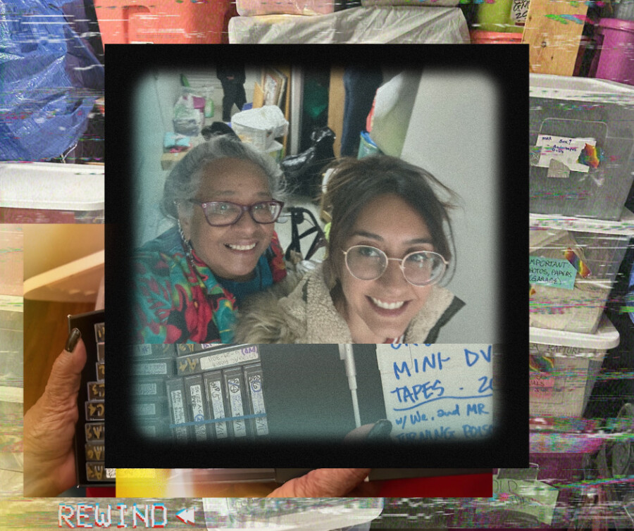

Plática con Marisa Hicks-Alcaraz: Archiving Muxerista Moviemaking
Join Sin Cinta Previa in a Zoom conversation with scholar, educator, curator, and memory worker Dr. Marisa Hicks-Alcaraz. Specializing in Latina moving image production, community and personal archiving, and relational feminist practices, she’ll share about her commitment to building community through film and video archival practice. We’ll also discuss her path to archiving as non-custodial, anticolonial, reciprocal, and healing practices. Hicks-Alcaraz reimagines preservation as an ongoing, creative, affective, and collaborative process, recovering and activating stories of Latinx communities on their own terms.
From Do-It-Yourself/Together (DIY/T) digital archiving initiatives to film curation and participatory memory workshops, in this community-centered talk, Hicks-Alcaraz will share her culturally grounded approach to preserving cultural memory. All of Sin Cinta Previa’s community members, video artists, and documentarians are welcome to discuss and ask questions about these and your own research and anticolonial methodologies.
We’ll discuss working with Latinx communities to create community-owned and digitized video archives. Hicks-Alcaraz will share her work supporting the Garifuna community in archiving efforts in California and at the Independent Media Center in Champaign-Urbana, IL. She’ll also share about her scholarly research into digital rasquachismo and the oeuvre of Muxerista filmmaker Osa Hidalgo de la Riva. This marks a full-circle moment and celebration for Sin Cinta Previa, which screened the video work of Osa Hidalgo de la Riva at its inaugural, educational programming in 2018.
Join Sin Cinta Previa in a riveting and reflexive conversation.
Event Date/Time:
Thurs. Feb. 26, 2026, from 7pm-8pm Central Time
Register for Zoom invite here.
After registering, you will receive a confirmation email containing information about joining the meeting.